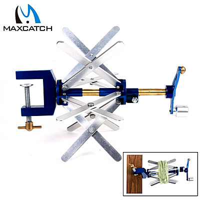

ティップス
便利な小道具 マックスキャッチ社 フライライン・ワインダー
2019年の秋、中国の MaxCatch社 のウェブサイトを見ていたら、フライライン用のラインワインダーを見つけました。価格は、定価：35USD、割引価格：29USD（2019/12/29現在）でした。29$とすれば、日本円で 3,180円ほどと、かなりお値打ちです。製品の写真を見る限り、なかなかしっかりと作られているようで、二件寄せられていたレビューも高評価でした。これはニュージーランドのブリントさんへのクリスマスプレゼントに良いかな？と思い、さっそくポチッと購入しました。何と言ってもこの会社の通販サイトは、通常便であれば日本への送料が無料なので助かります。これがいつまでも続いてくれるとまことにありがたいのですが。

基本的な構造は、僕が昔購入した Angler's Image 社製のものと同様ですが、もっと頑健・無骨な作りで、耐久性は勝りそうです。
主要部品はアルミ製で軽く出来ており、鋳鉄？製のクランプで机に固定して使います。４組のアームを支える円筒形の部品を動かすと、アームの径が変化し、好みの直径でラインを巻き取ることが出来ます。
新品なのになぜか、クランプ部のネジが少し錆びていたりして、さすがは中国の会社の製品だ！？と思わされましたが、実用面では全く問題は無いのでご安心ください。（笑）
念のためにオイルを注し、アームの交点やシャフトの摺動部には CRC を吹きつけておきました。
ワインダーが一つあると、フライラインのメンテナンスや新品ラインのリールへの装着、ラインの保管が簡単・迅速・丁寧にできるようになります。クリスマス直前に何とかブリントさんへ届いたので安心しました。
「タケシ！ こいつは便利そうだ！ サンキュー！！」
と、先日の電話で喜びの声が聞けました。
このラインワインダーは、ナイロンやフロロのモノフィラメントラインを空スプールに巻き取ることはできませんが、ループ状になら巻けるので、ルアー用ラインの収納時にも役立っています。
フライフィッシングをされる方は、ひとつ入手しておくととても便利だと思います。
ティップス 目次へ
サイトマップ
ホームへ
お問い合わせ